Baseball Stadiums & Golf Architecture: A Curious Comparison
The parallels are not as ridiculous as one might presume.
Baseball often seems distant and incomparable to an individual sport such as golf. Though the rules of each are dissimilar, both sports feature variable settings in which they play.
The opportunity for diverse playing grounds manifests itself most prominently in each design’s response to its natural property dimensions and appearance. These two categories of resemblance will encapsulate this article’s focus.
The Dimensions
Unlike the strict parameters that define boundaries in football, soccer, and basketball, baseball stadiums have flexible outfield dimensions. These adjustable parameters give leeway for unique designs that mold to the stadium’s surroundings.
Most casual sports fans are familiar with the famous Green Monster and Pesky Pole at Fenway Park in Boston. These odd features were conceived out of the restrictions of the site — the architects took advantage of the strange situation and provided interest given the circumstances. These features do not appear as contrived, as they originated out of necessity.
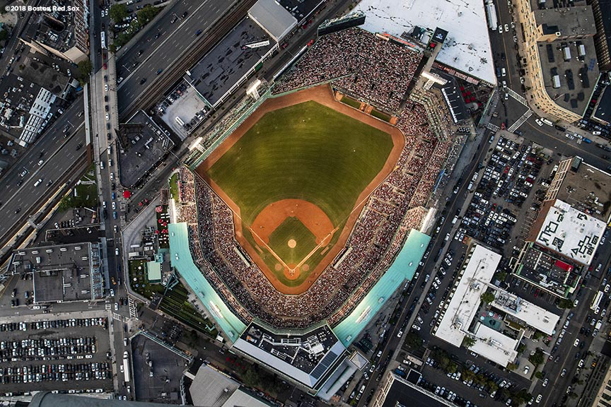
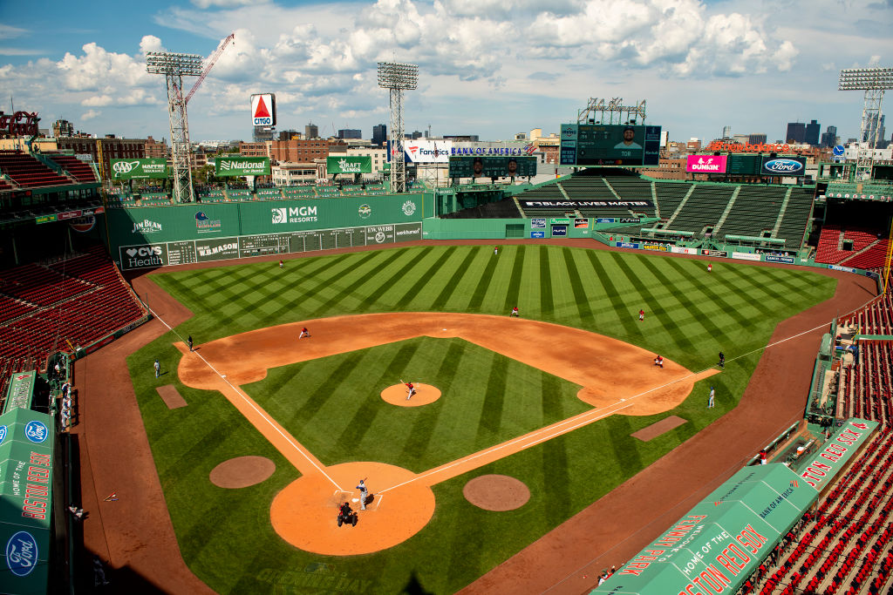
Fenway Park features more than a few unusual dimensions (credit: Boston Red Sox, Getty)
As seen in the aerial above, Fenway’s outfield dimensions conform to its property’s restrictions. Without the natural constraints of the site, the quirky Green Monster, center field triangle, and Pesky Pole in right field would lack any justification for their existence. These beloved characteristics at Fenway are certainly quirky, but they have a purpose given the innate limitations.
The Olden Days
In the olden days, many other parks such as Ebbets Field, Baker Bowl, Old Yankee Stadium, and the Polo Grounds featured asymmetric dimensions that also conformed to the existing city block systems. Not only that, but these parks created the opportunity for strategy within pitching and batting that was specific to each site.
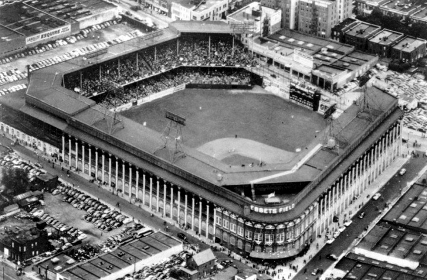
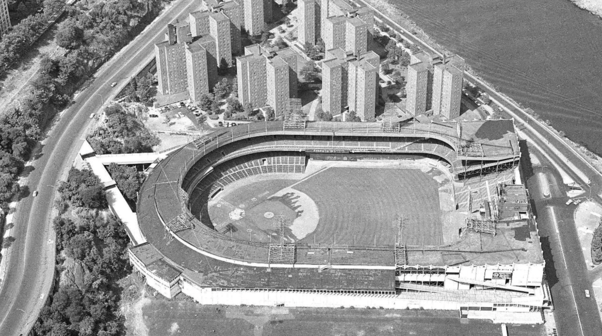
Ebbets Field (left) and Polo grounds (right) provided interesting strategic circumstances through their odd configuration (credit Ballparks of Baseball, Bronx Pinstripes)
Tom Doak commented on this phenomenon in a 2014 Golf Club Atlas post:
“The thing about these different parks is that they introduced strategy into pitching. When Jim ‘Catfish’ Hunter was with the Yankees, and the Red Sox came to visit, announcers would talk all day about these long fly outs that ‘would have been home runs at Fenway’. No one understood that better than Mr. Hunter… he was just pitching to the park, secure in the knowledge that the Red Sox hitters would be content to hit their long fly balls and then complain about the park…
Few of the quirks in new ballparks actually create any strategy that the pitchers or hitters can utilize, as many of the old ballparks did, because the modern architects are afraid to affect the game that much. As in golf, most of the real strategy only happens when the conditions of the ground force the architect’s hand.”
Doak’s comment leads this discussion of baseball dimensions to its relationship to golf architecture —
So, how do baseball dimensions relate to golf architecture?
The dimensions of a baseball stadium exist to define the boundaries of play. Golf course properties are no different in this sense — the holes are contained within the white stakes that define the edges of the property.
Though baseball interacts with its boundaries more frequently than golf courses, many golf courses interact with property lines in creative arrangements, akin to Fenway and Oracle Park.
For example, the Old Course‘s 16th and 17th holes beautifully illustrate how interest can naturally be derived from the inherent dimensions of play. In a classic strategic dilemma, those who venture closest to the out-of-bounds are rewarded with the most favorable angle into the green. Those that stray away from the hazard have ample room to miss; however, a long approach with a poor, shallow angle over bunkers awaits.
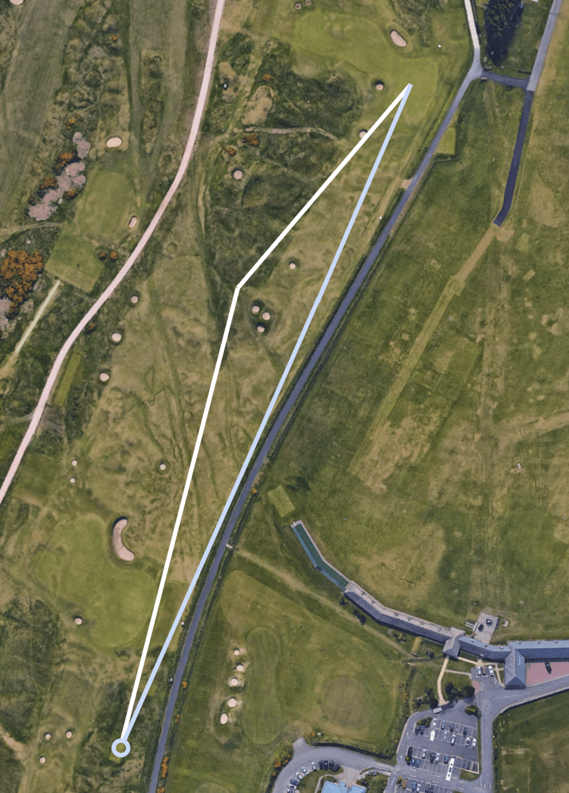
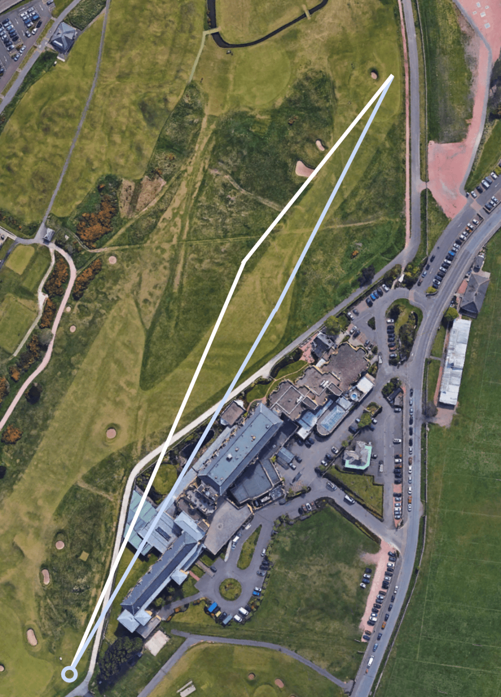
The 16th and 17th holes at St. Andrews offer exciting designs that revolve around the dimensions of the property.
From the iconic “Principal’s Nose” bunker on the 16th to the famed narrow 17th green fronting a road, these holes offer compelling compositions that adapt to the property dimensions they border. Akin to the many old ballparks with unique dimensions, the setting of the Old Course presents unconventional questions about how one should play each hole — or in baseball terms, how to “pitch to each batter”.
---
It is more than a coincidence that some of the most beloved holes in golf -and- stadiums in baseball both feature creative and unusual design choices derived from their respective inherent property dimensions.
---
“Quirkiness” for the sake of “Quirkiness”
Though unconventional outfield features and golf holes are often mesmerizing and fun, designs that force creative settings are often not as memorable. Instead, these surroundings appear contrived and artificial, which indicates insecurity about the identity of the product. Architects must steer clear of creating quirky characteristics solely for the purpose of being “quirky.“
There exist few better examples of this problem than the infamous Tal’s Hill in Minute Maid Park. For those unaware of this bygone spectacle, the Astros’ stadium used to include additional space past the warning track in center field. As outfielders dashed back, they encountered a hill with a 15-degree incline and a flag pole in the field of play. The outfield wall stood an astounding 436 feet from home plate. The hill sparked many intriguing moments throughout its tenure, despite its gimmicky and contrived appearance.
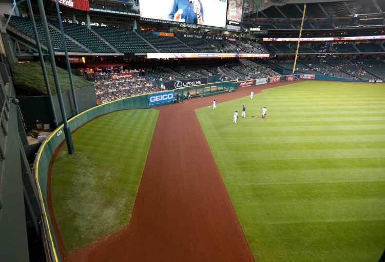
Tal’s Hill in Minute Maid Park (Credit: Karen Warren)
As amusing and entertaining the moments were involving Tal’s hill, there was no necessity for its existence. This was one of the eventual reasons that led to its demise after 16 years in the park.
Golf courses must grapple with the same issues. Though interest and quirkiness are often praised, unusual features must exist for a naturally assumed reason. If designers do not take careful consideration, the product can appear forcefully contrived — especially if the aesthetic vision is misplaced.
Aesthetics and External Appearance
The second area in which similarities preside between golf courses and baseball stadiums is through the aesthetic element. Both are inherently set within a local setting that bears a distinct appearance. If a design’s external features completely ignore the neighboring style, the stadium or course stands out in hideous contrast. Thus, the blending of the design’s appearance with the local context is vital to both.
To exemplify this shared criterion in effect, we will examine stadiums and courses that excel and fail at this task.
LoanDepot Park – A Floridian U.F.O.
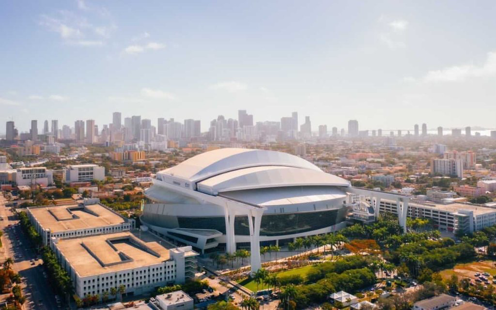
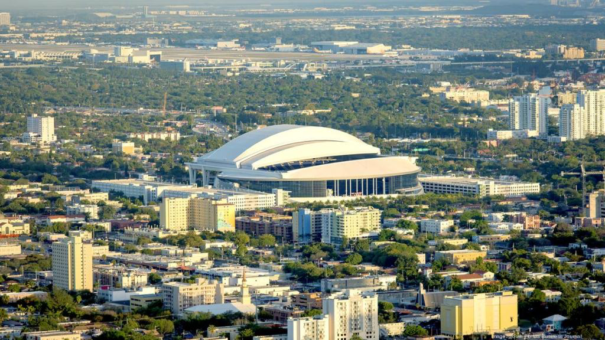
The odd contrast between the Marlins’ Park and the surrounding neighborhood (credit: Jock Fistick, LoanDepot Park)
Though the sleek modern design of the Miami Marlins’ stadium would have fit perfectly within the confines of downtown Miami, the stadium is built in a neighborhood 2 miles west with a completely different appearance. Little Havana does not furnish the same modern surroundings as downtown Miami, to say the least.
It does not require much argumentation to demonstrate that LoanDepot Park (the name as of 2022) does not cater its external appearance to its local surroundings. Some have commented they thought a spaceship had landed in the middle of Little Havana at first glance! The stadium does not engage the local flair and aesthetic in any meaningful manner, and the identity of the stadium appears attached to an area in which it does not exist.
Wolf Creek (Nevada) – Waterfalls in the Wasteland
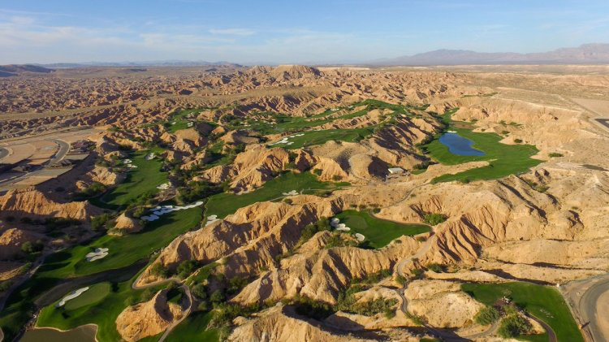
Wolf Creek is not a problematic course to bash on, as its entire existence is relatively predicated on its unnatural appearance. Nonetheless, it serves as a helpful example for our discussion. Built upon some of the most inhospitable terrain for golf, the course offers anything but a mundane round. However, despite its unique routing and topography, the course makes no effort to mold its aesthetic to the ground upon which it covers.
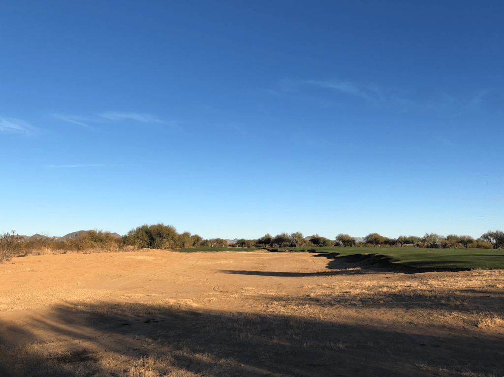
Wolf Creek would be better served taking notes from courses such as Talking Stick O’odham, which excellently blends its design with the native surroundings
Whereas other desert courses such as Talking Stick O’odham or We-Ko-Pa make a concerted effort to blend their designs into the natural aesthetic, Wolf Creek plops greens, bunkers, and lakes into the desert as if the location was Florida. There are no natural tie-in bunkers that fade into the brush, and few holes implement natural hazards into the core design. Instead, lakes and waterfalls abound in the last place anyone would anticipate discovering such elements.
PNC Park – Perfectly “Pittsburgh”
As with golf courses, baseball stadiums should mold themselves into their respective communities, especially through the design of the facade. The materials should be connected to the traditional regional structures and surroundings, using local contextual inspiration for the design. Famed classics such as Wrigley Field and Fenway Park mold seamlessly into their communities, and their exterior architecture is paramount to the achievement of this effect.
We could go on about classic ballparks as such, but a modern example will provide a more applicable understanding of these concepts.
A panorama of PNC park’s front exterior (credit: Augie’s Panoramas)
There are few better contemporary illustrations of intelligent exterior designs than the Pittsburgh Pirates’ PNC Park. The city of Pittsburgh, and specifically the surrounding north shore, houses many buildings of beige color. The exterior design of the stadium takes advantage of this common feature, and not only in color.
PNC Park uses local rugged materials to cover its exterior, with Kasota stone and ochre limestone that reflects much of the surrounding architecture. In true Pittsburgh fashion, there are dark blue steel trusses that trace the outside, mimicking the bridges along the river and the regional association with steel.
If anything, the greatest accomplishment of the exterior is the park’s lack of external abrasiveness and glamour. PNC Park conforms so sufficiently to the confines of its area that it appears as another standard building. It even brings out the attributes of the local buildings to a greater degree than before, highlighting their architectural merits through its edifice.
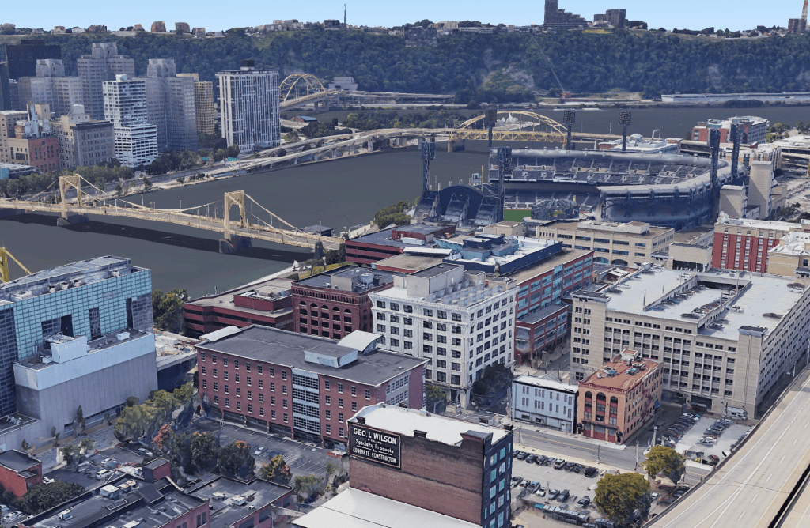
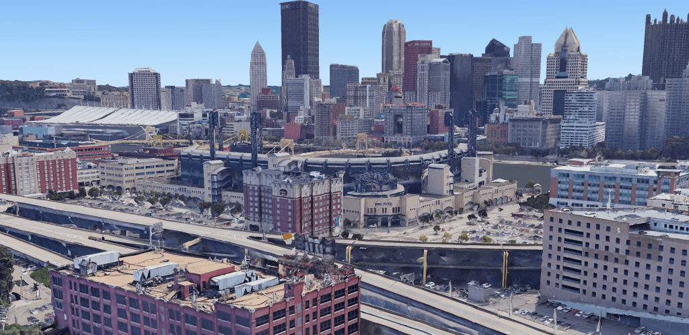
A few Google Earth aerials are that is needed to reveal the brilliance of PNC Park’s camouflage in the setting of Pittsburgh
The effect this stadium has on its surrounding area should be the desire of any golf course. Courses should showcase the natural beauty of the land instead of manipulating it. Gimmicks and odd features should be sidelined to allow the subtle beauty of the natural existing land to make interminable impressions on the golfer.
Concluding Thoughts
Though the elements of dimensions and aesthetics encompass most of the similarities between the two forms of architecture, it would be foolish to assume the discussion ends with these categories. For example, one could also argue that a stadium’s management of its human traffic is similar to a golf course’s routing. An open concourse that facilitates a fan’s exploration is similar to a golf routing’s ability to guide players through all the intriguing components of the land. It seems one could go on forever with these thought experiments.
Despite the non-comprehensive nature of this conversation, it is evident that digging into the similarities between the two enriches our respective understanding of each. Oftentimes, one can become stuck studying within the confines of his own specific interest. However, there are always unnoticed insights that await outside the walls, into the realms of unfamiliar and discreet topics. Sometimes we simply need a little perspective to grasp them.